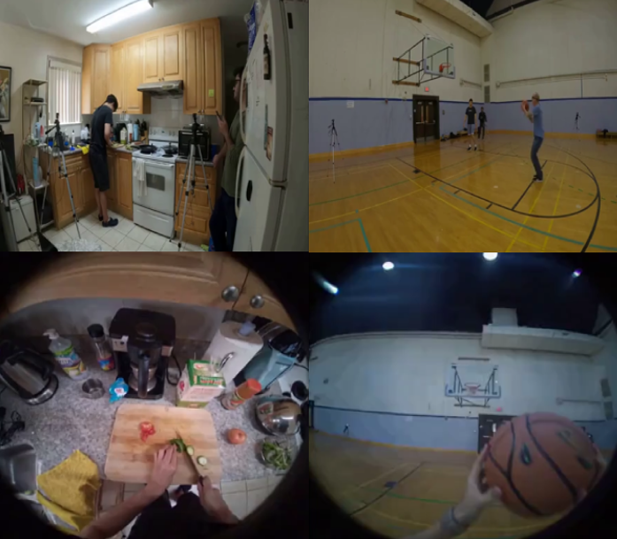

Algorithm Engineer
GenGenAI
Email: yhugestar-at-gmail-dot-com

I am currently fulfilling my alternative military service as an Algorithm Engineer at GenGenAI, where I work on 3D-based synthetic data generation, working closely with Suhwan Cho and Soongjin Kim.
My research lies in 3D computer vision centered on humans, with a focus on capturing, understanding, and reconstructing people in 3D. Ultimately, I aim to build machines that perceive and understand human motion and behavior as naturally as people understand one another. I pursue this direction by building practical capture systems and learning-based methods that bring humans into the digital world.
I completed my M.S. at Seoul National University and my B.A. at the University of Virginia, both in computer science. During my M.S., I was fortunate to be part of the Visual Computing Lab under the supervision of Hanbyul Joo. Previously, I have worked at SECERN AI, working on Animatable 3D Human Avatars.
- Sep 2025I started working as an Algorithm Engineer at GenGenAI.
- Mar 2025SVAD has been accepted to CVPR 2025 Workshop SyntaGen.
- Mar 2024I started working as a Research Engineer at SECERN AI.
- Feb 2024I've graduated from SNU with an M.S.
*: equal contribution, †: corresponding author
-

Generating First-Person Videos from a Single Third-Person CameraUnder Review, 2026Title has been modified for double-blind review. Details will be released upon acceptance. -
 CVPR 2025 Workshop, SyntaGen — Harnessing Generative Models for Synthetic Visual Datasets, 2025
CVPR 2025 Workshop, SyntaGen — Harnessing Generative Models for Synthetic Visual Datasets, 2025 -
 Master's Thesis, Computer Science and Engineering, Seoul National University, 2024
Master's Thesis, Computer Science and Engineering, Seoul National University, 2024
-
SECERN AI, May 2025- Official Implementation of the paper SVAD
- Synthetic Data Generation Pipeline for 3DGS Avatar Training -
SECERN AI, March 2025- 3D Face Mesh Deformation with Pin-Based Interaction
- Multiview Face Modeling with Real-time 3D Consistency -
SECERN AI, December 2024- 9-view Fanbeam Calibration
- X-Ray Hazardous Objection Detection
- 3D Bounding Box Detection -
SECERN AI, June 2024- Fitting SMPL Parameters to 3D Human Joints
- Parametric Human Shape and Pose Optimization -
Visual Computing Lab, December 2023- Unofficial Implementation of the Paper xR-EgoPose
- Egocentric 3D Human Pose Estimation from a Single Fisheye Camera -
Visual Computing Lab, April 2022- 5 GoPro Camera Setup for 3D Human Reconstruction
- Camera Calibration with Zhang's Method


- Sep 2025 – Present Algorithm Engineer — GenGenAI Controllable Image and Video Generation Across Domains
- Mar 2024 – Sep 2025 Research Engineer — SECERN AI Animatable 3D Human Avatars
- Fall 2023 Teaching Assistant — Artificial Intelligence Seoul National University · Instructor: Hanbyul Joo
- Spring 2022 Teaching Assistant — 3D Computer Vision Seoul National University · Instructor: Hanbyul Joo